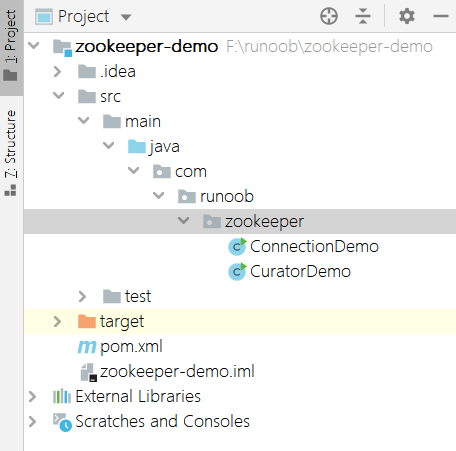
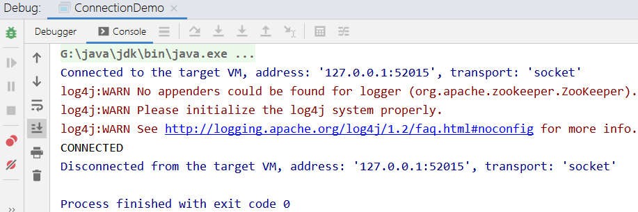
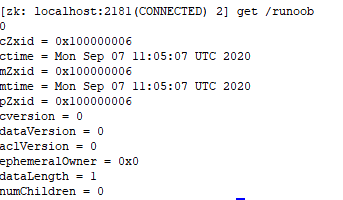
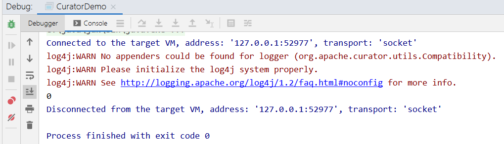

本チュートリアルで使用する IDE は IntelliJ IDEA です。maven プロジェクトを作成し、名前を zookeeper-demo とし、以下の依存関係を導入します。依存関係のバージョンは Maven 中央リポジトリで適切なものを選択できます。ネイティブ API と Curator の2つの方法を紹介します。
IntelliJ IDEA 関連の紹介：
<dependency>
<groupId>junit</groupId>
<artifactId>junit</artifactId>
<version>4.11</version>
<scope>test</scope>
</dependency>
<dependency>
<groupId>org.apache.zookeeper</groupId>
<artifactId>zookeeper</artifactId>
<version>3.4.8</version>
</dependency>
<dependency>
<groupId>org.apache.curator</groupId>
<artifactId>curator-framework</artifactId>
<version>4.0.0</version>
</dependency>
<dependency>
<groupId>org.apache.curator</groupId>
<artifactId>curator-recipes</artifactId>
<version>4.0.0</version>
</dependency>
Maven プロジェクトのディレクトリ構造：

一、クライアントの zookeeper ネイティブ API
zookeeper ネイティブ API を使用して、前のチュートリアルで構築した3台のサービスからなるクラスタに接続します。接続には時間がかかるため、countDownLatch でブロックして接続成功を待ち、コンソールに接続状態を出力します！
インスタンス
...public static void main(String[] args) {
try {
final CountDownLatch countDownLatch=new CountDownLatch(1);
ZooKeeper zooKeeper=
new ZooKeeper("192.168.3.33:2181," +
"192.168.3.35:2181,192.168.3.37:2181",
4000, new Watcher() {
@Override
public void process(WatchedEvent event) {
if(Event.KeeperState.SyncConnected==event.getState()){
countDownLatch.countDown();
}
}
});
countDownLatch.await();
System.out.println(zooKeeper.getState());
}
}
...
コンソールに connected と出力され、接続成功と表示されます！

ノードを追加する API の簡単な例：
zooKeeper.create("/runoob","0".getBytes(),ZooDefs.Ids.OPEN_ACL_UNSAFE,CreateMode.PERSISTENT);
ヒント：その他のコマンド機能の使用については、本チュートリアルの後の章を参照してください。
同時にサーバー側のターミナルでコマンドを実行すると、設定成功と表示されます。

二、クライアントの Curator 接続
Curator は Netflix 社がオープンソース化した zookeeper クライアントフレームワークで、接続の再接続、Watcher の繰り返し登録、NodeExistsException 例外など、多くの Zookeeper クライアントの非常に低レベルの詳細な開発作業を解決します。
Curator にはいくつかのパッケージが含まれています：
-
curator-framework：zookeeper の低層 API のいくつかのカプセル化。
-
curator-client：再試行ポリシーなど、クライアントの操作を提供します。
-
curator-recipes：Cache イベント監視、選挙、分散ロック、分散カウンター、分散 Barrier などの高度な機能をカプセル化しています。
簡単な使用例：
インスタンス
public class CuratorDemo {
public static void main(String[] args) throws Exception {
CuratorFramework curatorFramework=CuratorFrameworkFactory.
builder().connectString("192.168.3.33:2181," +
"192.168.3.35:2181,192.168.3.37:2181").
sessionTimeoutMs(4000).retryPolicy(new
ExponentialBackoffRetry(1000,3)).
namespace("").build();
curatorFramework.start();
Stat stat=new Stat();
byte[] bytes = curatorFramework.getData().storingStatIn(stat).forPath("/runoob");
System.out.println(new String(bytes));
curatorFramework.close();
}
}
前の手順で設定した/runoobノード値のため、コンソールに出力されます。

Curator 関連の参考リンク：http://curator.apache.org/。
demo ソースコードのパッケージファイル：
Download
クリックしてノートを共有
<p style="font-size:14px;">ノートはこの記事の内容を拡張したものである必要があります！</p><br> <p style="font-size:12px;"><a href="../tougao.html" target="_blank">記事投稿は、ここをクリック</a></p> <p style="font-size:14px;"><a href="./runoob-user-test-intro.html" target="_blank">招待コードの取得方法</a></p> <h3 class="text-muted"><i class="fa fa-info-circle" aria-hidden="true"></i> ノートを共有する前に<a href=".." class="runoob-pop">ログイン</a>！</h3> <p><a href="./runoob-user-test-intro.html" target="_blank">招待コードの取得方法</a></p>